Luuk van Dooremalen
Communicatie & multimedia design student
Let’s light up new possibilities
Ik ben Luuk en ik zit nu in het 2de jaar van Communication & multi media design. Ik probeer problemen graag creatief aan te pakken en doe graag onderzoek hierna. In deze tijd verandert technologie zo snel en ik vind het ontzettend leuk om dit te onderzoeken en bij te houden, en vind het geweldig hoeveel kansen en nieuwe mogelijkheden dit biedt.
Mijn passie ligt echt bij het grafische en development gedeelte. Ik maak gebruik van programmas zoals photoshop, indesign, xd. Maar mijn favoriete programma’s zijn figma en illustrator. Hiermee kan ik echt me creativiteit los laten. Ook vind ik het ontzettend leuk om te coderen. Html en CSS heb ik onder de knie. Maar iets als Javascript zit ik toch nog wel in de start fase. Maar ik leer hier graag over en probeer ook elke dag mezelf te verbeteren